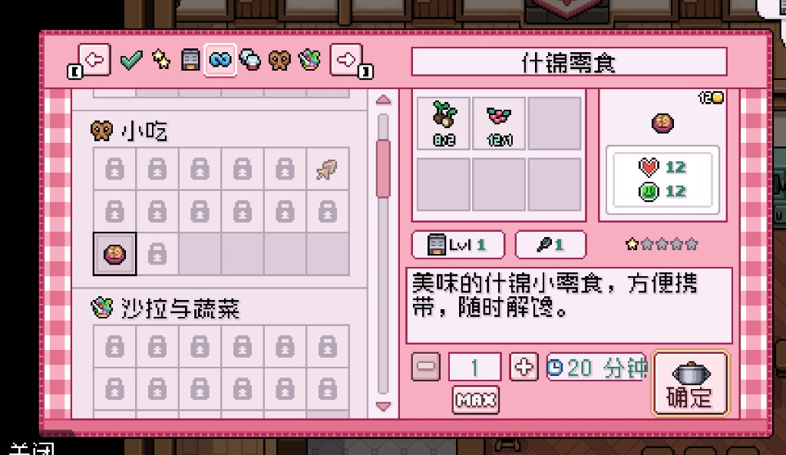
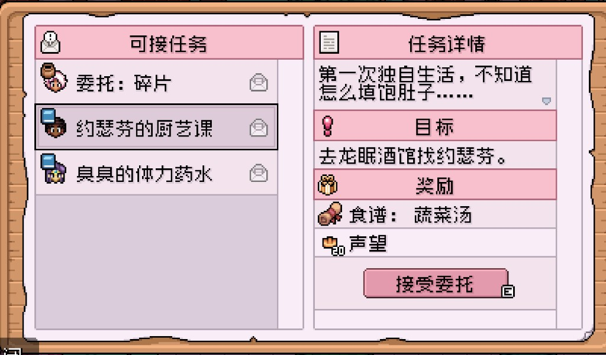

Quick answers
- Energy food beats fancy plating early.
- Quest recipes (trail mix, snacks) come first.
- Keep a kitchen path once unlocked.
- Do not buy ingredients that erase seed money.
- Ship duplicates after you cook what you need.
Why cook early
One cooked snack prevents a faint. Board quests sometimes want cooked items—read before selling forage.
What we cooked
Trail mix and simple soups from spare crops/berries. Enough to feel safe in mines and on clear days.
Safe to skip
- Mastery of every recipe book
- Cooking instead of watering
Screenshots from our save
Real Fields of Mistria shots from our first-season play. Captions in English; in-game UI language may differ.




FAQ
No kitchen yet?
Eat raw forage; unlock cooking as story allows.
Cook for profit?
Later. Energy and quests first.
Unofficial fan guide. Not affiliated with NPC Studio. Verify details in your game version.